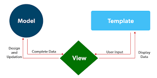
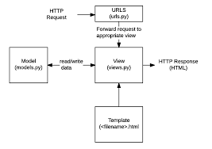
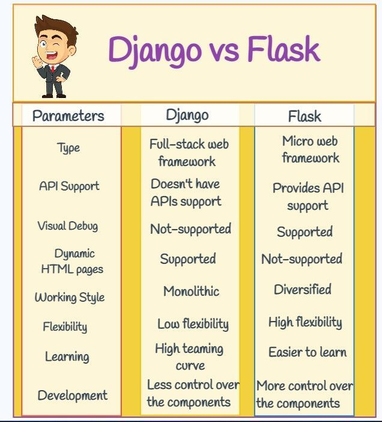

ویژگیهای کلیدی
پروژه Django
*برنامهنویسی سریع و آسان.

مزایای استفاده از Django:
- سرعت در توسعه
- امنیت در برنامهنویسی
- مدیریت پایگاه دادهها به صورت خودکار
- مدیریت کاربر و احراز هویت
سازگاری با پایگاه دادههای مختلف مانند:
- SQLite
- PostgreSQL
- MySQL

مدیریت URL: Django به توسعهدهندگان این امکان را میدهد که URLهای خود را بهسادگی مدیریت کرده و به Viewهای خاصی متصل شوند.

قابلیت استفاده مجدد: با کمک Templates و Apps، میتوانید قابلیتهای خود را دوباره استفاده کنید.

نتیجهگیری
استفاده از Django برای توسعه وب، به دلیل سرعت و کارایی بالای آن، یک گزینه عالی است. این فریمورک به شما این امکان را میدهد که برنامههایی امن و قابل نگهداری بسازید.